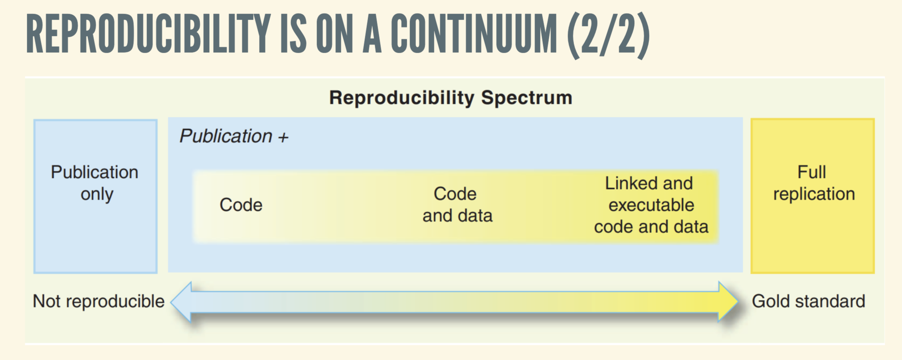
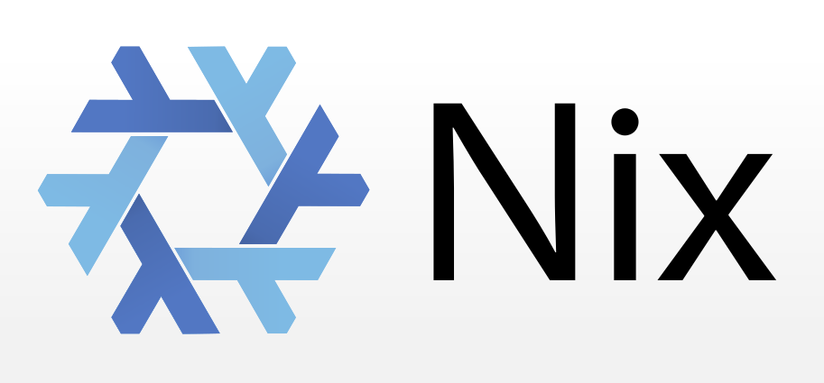
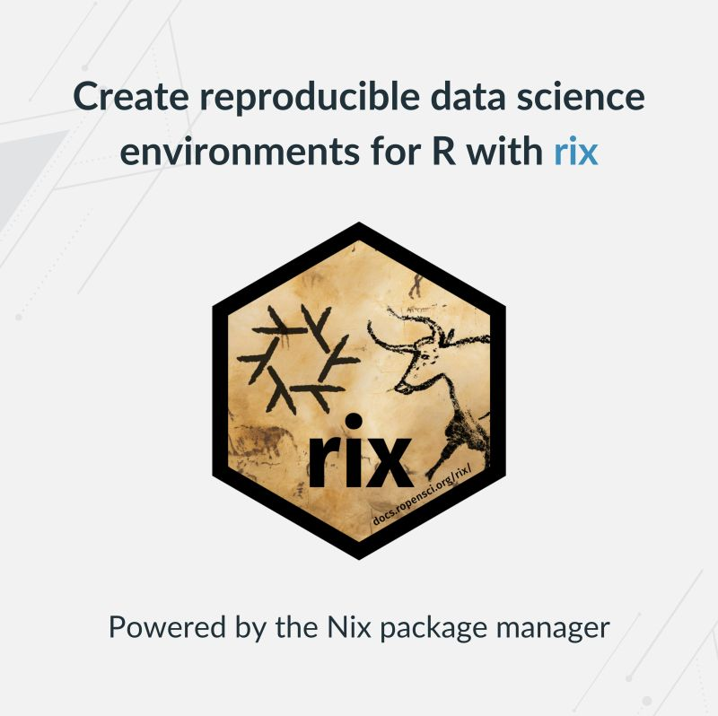

At a recent R Medicine webinar hosted by the R Consortium, Bruno Rodrigues, Head of the Statistics and Data Strategy Departments at Luxembourg’s Ministry of Research and Higher Education, presented an innovative approach to reproducibility in R: one that eliminates the complexity of containerization, works seamlessly across systems, and offers analysis reproducibility for years into the future.
The Challenge of Reproducibility in Data Science
Reproducibility is a cornerstone of scientific research, yet achieving it in data science remains challenging. Rodrigues explains that reproducibility is on a continuum and depends on 4 factors: the version of R, package versions, operating systems, and hardware. Traditional tools like {renv} capture R package dependencies but fall short in tracking system-level libraries or the R interpreter itself. In my own work, I’ve utilized {renv}to import packages for implementing tables for R-powered websites. Containerization tools like Docker offer more comprehensive encapsulation but come with their own complexities and do not guarantee deterministic builds.
Rodrigues emphasized that true reproducibility requires capturing the entire computational environment, including system libraries, compilers, and the operating system. This holistic approach ensures that analyses can be rerun with identical results, regardless of changes in the software ecosystem.

Nix: A Functional Package Manager for Reproducible Builds
Nix is a cross-platform package manager designed for reproducibility. It allows users to define environments declaratively, ensuring that builds are deterministic and environments can be recreated identically across different systems and over time. Nix manages not just R packages but also system dependencies, making it a comprehensive solution for reproducible research.
Rodrigues highlighted that Nix’s approach to package management eliminates issues related to hidden dependencies and environment drift, common pitfalls in data science workflows.
“Nix really makes it possible to reach this gold standard of reproducibility.”

Introducing {rix}: Bridging R and Nix
To make Nix more accessible to R users, Rodrigues developed {rix}, an R package that simplifies the creation of reproducible environments using Nix. With {rix}, users can generate Nix expressions directly from R, specifying the R version, required packages, system dependencies, and preferred IDEs.
The core function, rix(), generates a default.nix file, which Nix uses to build the environment. This process ensures that the entire software stack, from the R interpreter to system libraries, is captured and can be reproduced reliably.

The “Magic” of {rix}
One of the standout features of {rix} is its ability to “freeze” environments in time. By specifying a particular date, users can recreate the exact state of CRAN and Bioconductor repositories as they existed on that day. This temporal pinning ensures that analyses remain reproducible, even as packages evolve.
Rodrigues described this capability as the “magic” of {rix}, allowing researchers to maintain consistent environments without manual intervention.
Key Advantages of {rix}
Rodrigues highlighted two critical benefits of using {rix}:
No Need for Pre-installed R: Once the Nix expression is generated, the environment can be built using Nix alone, eliminating the need for R to be pre-installed on the system. This feature is particularly useful for deploying environments on CI/CD systems or sharing with collaborators.
Seamless Integration with Docker: While Nix ensures reproducibility, Docker offers portability.
{rix}allows users to wrap Nix-built environments into Docker containers, combining the strengths of both tools for long-term preservation and distribution.
Real-world Applications and Future Developments
Rodrigues demonstrated how {rix} can be used to create environments that include IDEs like RStudio or VS Code, as well as additional languages like Python and Rust. One example where {rix} could come into play is the R Consortium website, which is published using Quarto, and uses RStudio and {renv} as a main part of the workflow. The content is pushed to GitHub where it’s published using GitHub Actions. These environments can be deployed across various platforms, including CI/CD pipelines, ensuring consistent and reproducible workflows.
Looking ahead, Rodrigues is developing {rixpress}, a companion package inspired by {targets}. {rixpress} aims to facilitate the creation of reproducible analytical pipelines, further enhancing the capabilities of {rix} and Nix in data science projects.
Getting Started with {rix}
To begin using {rix}, install the package from CRAN:
R
Copy code
install.packages("rix")
Then, generate a Nix expression for your project:
R
Copy code
library(rix)
rix(
date = "2024-12-14",
r_pkgs = c("dplyr", "ggplot2"),
system_pkgs = NULL,
git_pkgs = NULL,
ide = "code",
project_path = ".",
overwrite = TRUE,
print = TRUE
)
This command creates a default.nix file and an .Rprofile, setting up a reproducible environment tailored to your project’s needs.
Resources
- Bruno Rodrigues’s Slides: https://b-rodrigues.github.io/r-medicine-rix/#/title-slide
- GitHub Repository: https://github.com/ropensci/rix
- CRAN Package: https://cran.r-project.org/package=rix
- Documentation: https://docs.ropensci.org/rix
- Webinar Recording: R/Medicine YouTube Channel
- Bruno Rodrigues’s Blog: https://brodrigues.co